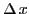
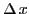

Next: Symbols for derivatives Up: Differentiation Previous: Comparison of increments Contents Index
The fundamental definition of the Differential Calculus is:
When the limit of this ratio exists, the function is said to be differentiable, or to possess a derivative.
The above definition may be given in a more compact form symbolically as follows: Given the function
Let  take on an increment
; then the function
take on an increment
; then the function  takes on an
increment
takes on an
increment
 , the new value of the function being
, the new value of the function being
It should be carefully noted that the derivative is the limit of the
ratio, not the ratio of the limits. The latter ratio would assume the
form
 , which is indeterminate (§3.2).
, which is indeterminate (§3.2).
david joyner 2008-08-11